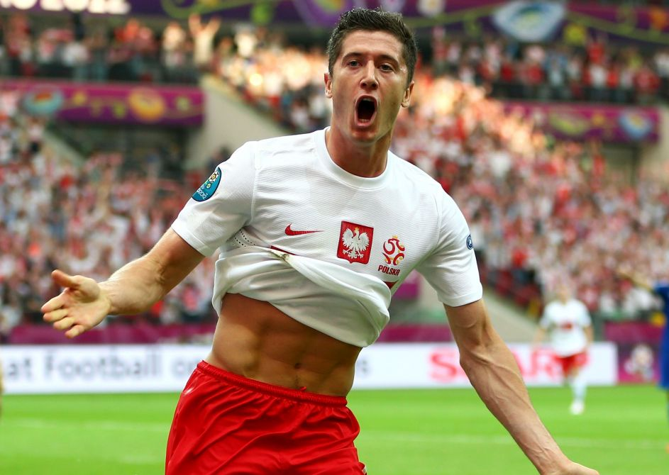

Reprezentacja Polski to nasz ukochany zespół.
Jako społeczność chcemy aby jak najwięcej osób kibicowało biało-czerwonym!

ZAGADKA! To liczba goli której brakuje R.Lewandowskiemu do przekroczenia bariery 100 bramek w kadrze :
🁋
Bądź na bieżąco z wynikami reprezentacji Polski! Zaobserwuj nasze social media.
Kanał na platformie YouTube